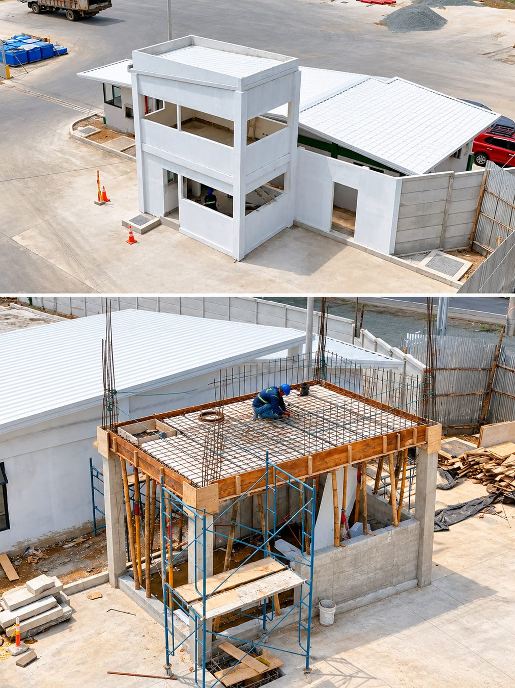
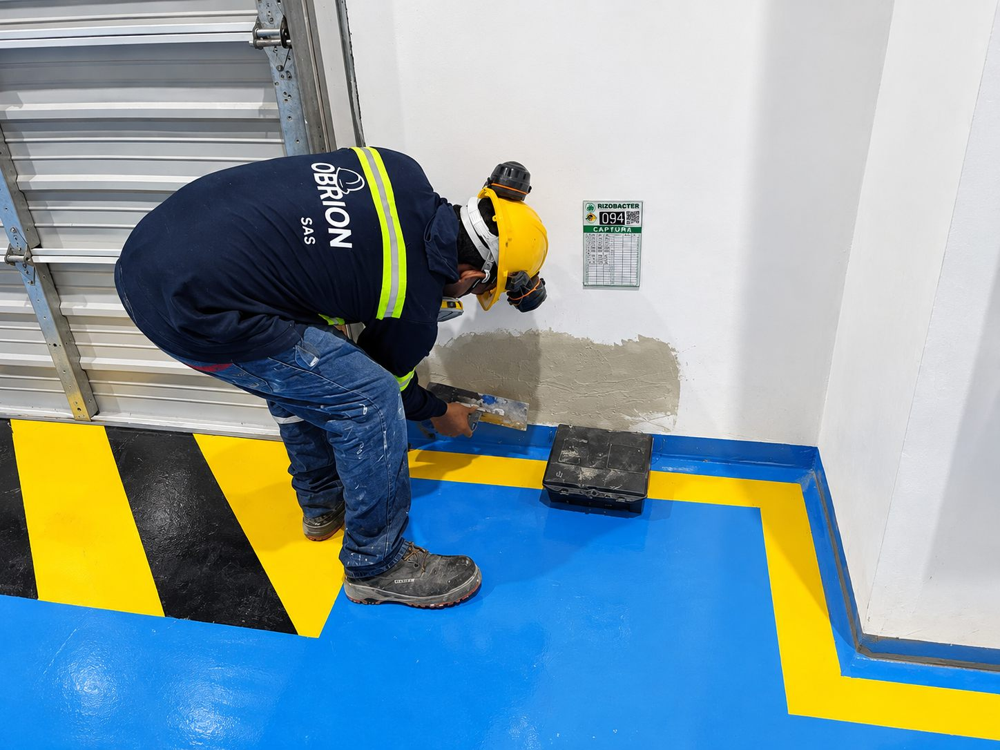
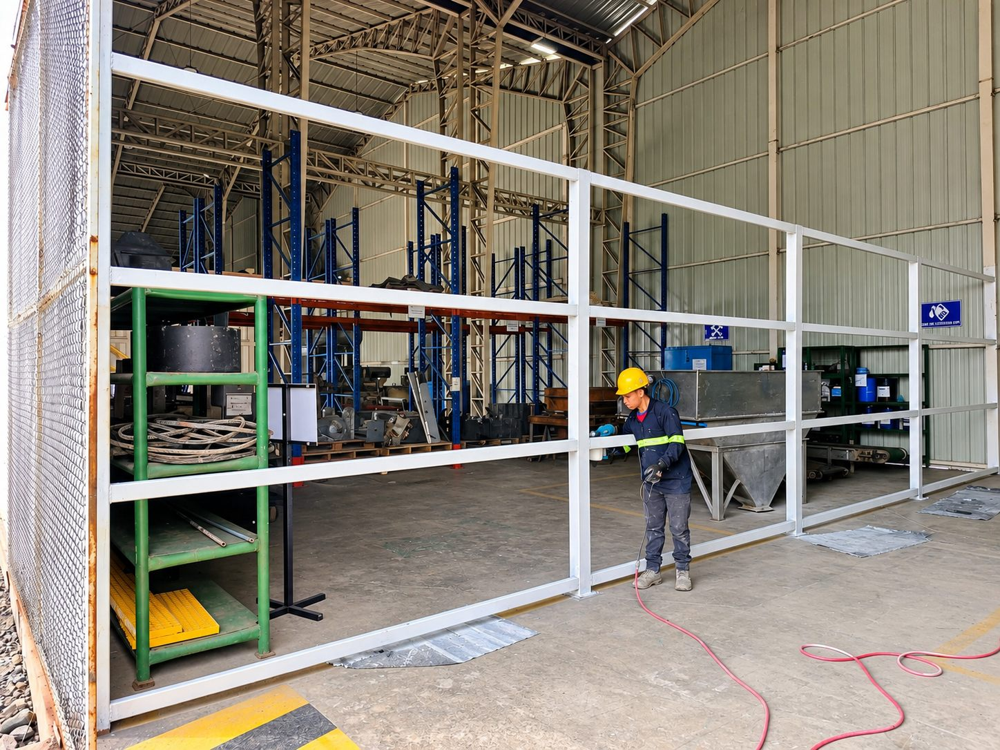
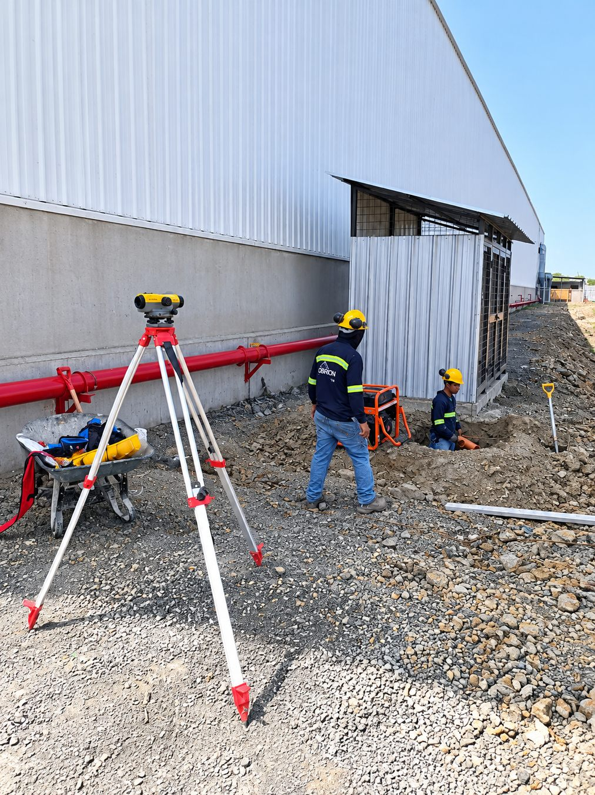
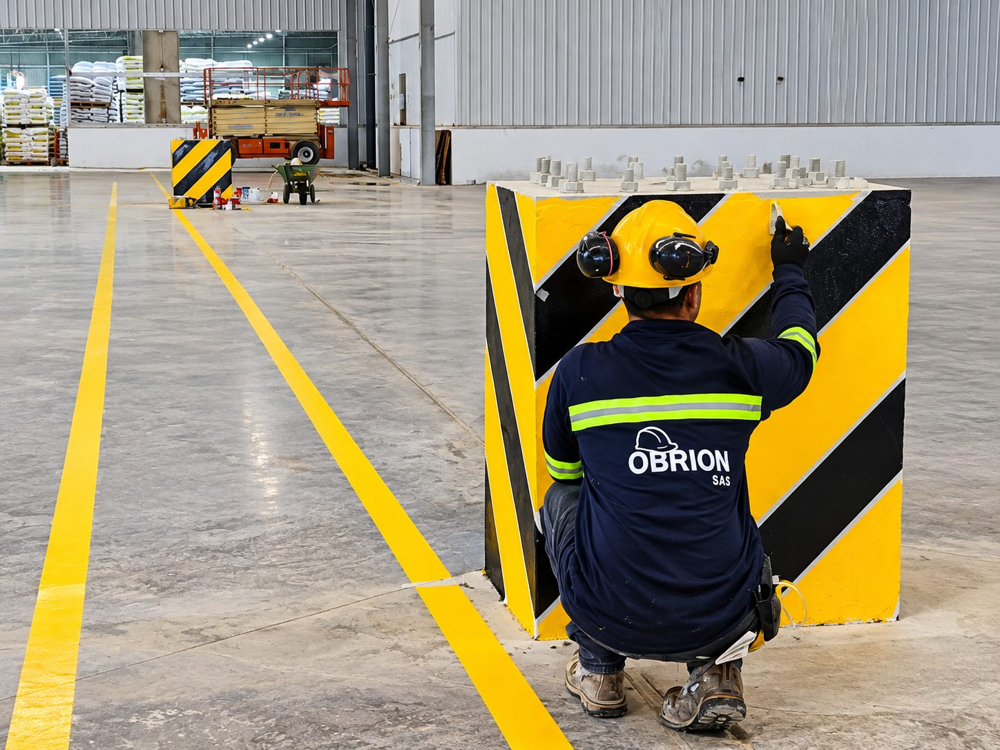
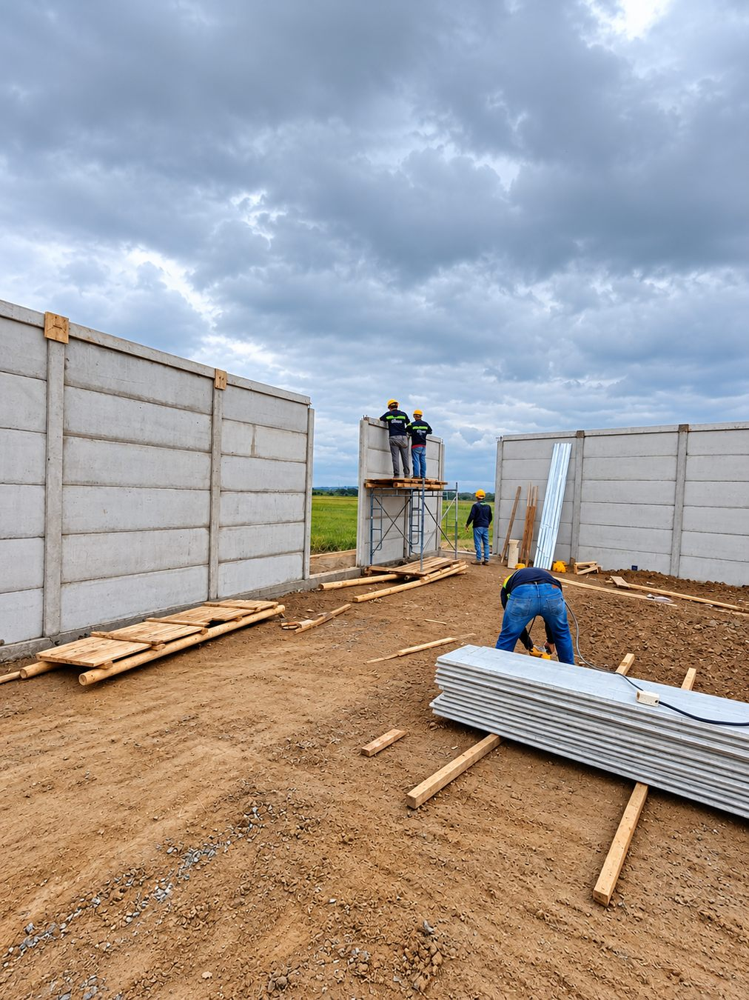
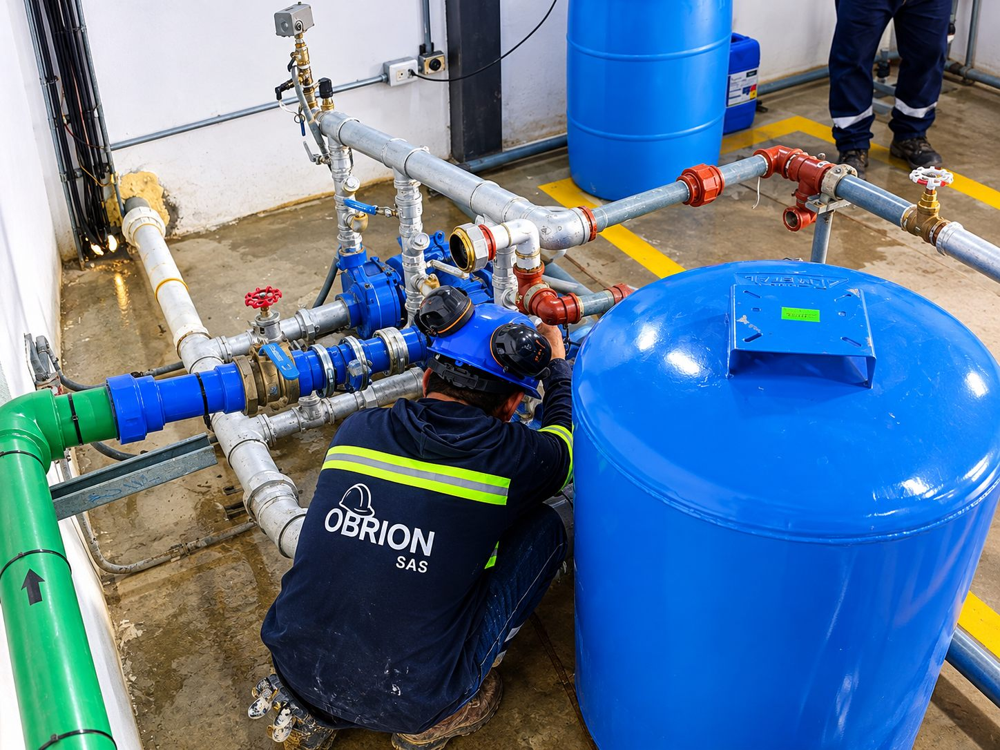
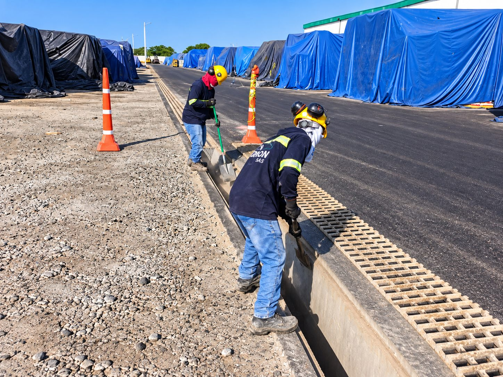
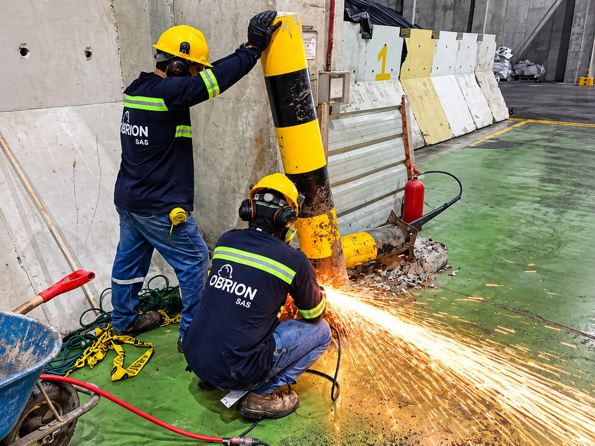
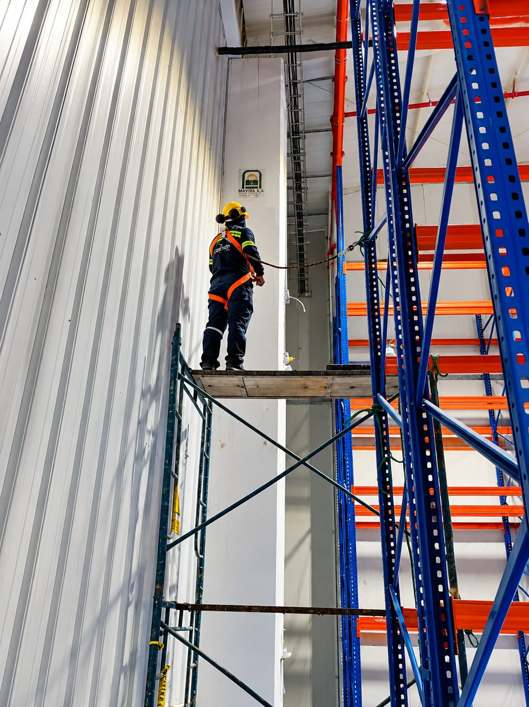

Construcción y obras civiles
Estructuras de hormigón armado, garitas, muros, cerramientos, bordillos, demoliciones y adecuaciones industriales.
Soluciones técnicas que construyen confianza.
Conozca nuestros proyectosSolicitar cotizaciónOBRION S.A.S. es una empresa ecuatoriana dedicada al desarrollo y ejecución de soluciones integrales de ingeniería, construcción, adecuación y mantenimiento de infraestructura.
Atendemos necesidades de empresas industriales, comerciales y del sector de la construcción, con intervenciones que priorizan funcionalidad, eficiencia y durabilidad.
Nuestro trabajo comprende obras civiles, infraestructura hidráulica y sanitaria, elementos de hormigón, trabajos metálicos, mantenimiento y topografía.

Brindar soluciones integrales de ingeniería, construcción y mantenimiento industrial mediante la ejecución responsable de proyectos, aplicando criterios técnicos, calidad y prácticas de seguridad.
Consolidarnos como una empresa referente en construcción y mantenimiento industrial en Ecuador, reconocida por su capacidad técnica, cumplimiento e innovación.
Transformar necesidades de infraestructura en soluciones técnicas confiables para nuestros clientes.
Valores: Responsabilidad · Integridad · Calidad · Seguridad · Eficiencia · Compromiso.
Soluciones adaptadas a los requerimientos técnicos y operativos de cada cliente.
Estructuras de hormigón armado, garitas, muros, cerramientos, bordillos, demoliciones y adecuaciones industriales.

Alcantarillas, canales de hormigón, drenajes, trampas de grasas y obras de evacuación de aguas.

Reparación de instalaciones, pintura industrial, señalización y adecuación de áreas operativas.

Fabricación, instalación y reparación de componentes metálicos, rieles, puertas y elementos auxiliares.

Levantamientos, replanteos, georreferenciación, GNSS, procesamiento geoespacial y planos técnicos.

Pintura de superficies industriales, áreas de circulación y elementos de protección.
Selección de intervenciones incluidas en nuestro brochure corporativo. Fotografías de obras reales.
Infraestructura para conducción y evacuación de aguas; excavación, preparación y hormigonado.

Intervenciones civiles en garitas de control e infraestructura auxiliar.

Muros, cerramientos prefabricados y obras civiles complementarias.

Trampas de grasas y componentes de drenaje.

Construcción y adecuación de canales para infraestructura industrial.

Reparaciones civiles, adecuaciones interiores y mantenimiento de áreas operativas.
Pintura de zonas de circulación, elementos de protección y superficies.

Reparación e instalación de componentes metálicos y adecuaciones técnicas.
Obras civiles, alcantarillas, garitas, muros y cerramientos.
Mantenimiento industrial, adecuaciones, pintura y trabajos técnicos.
Replanteo topográfico en la comuna Cerecita.
Promovemos la identificación de riesgos, el uso adecuado de equipos de protección personal, el orden en obra, la supervisión de actividades y las buenas prácticas constructivas.
Nuestra propuesta de valor combina planificación técnica, adaptación a necesidades operativas, atención personalizada y orientación a resultados funcionales y duraderos.
Los trabajos se desarrollan considerando los requisitos aplicables de seguridad, salud ocupacional y protección ambiental.
